대본과 HeyGen으로 영상까지 만드셨나요? 이제 영상 편집을 할 차례입니다. 건강 채널에서 사용할 편집기는 Vrew(브루)입니다.
1. Vrew 설치하기
Vrew 바로가기 →Vrew 홈페이지에 들어가서 무료 다운로드를 클릭해서 다운로드 받아줍니다.
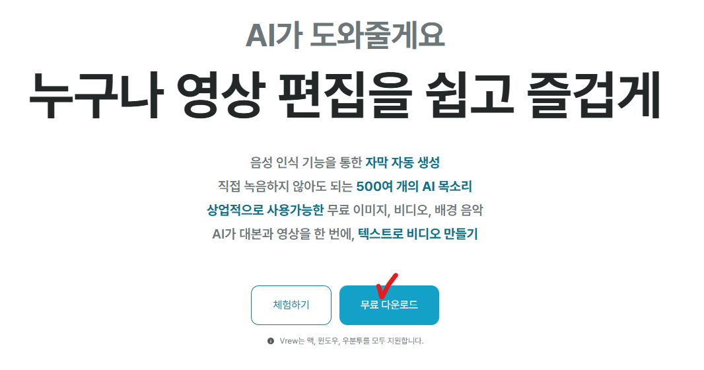
다운로드가 완료되면 설치를 진행해서 바탕화면에 깔아줍니다.
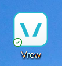
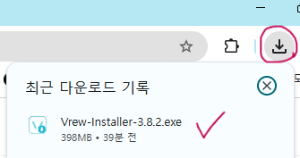
2. 로그인 및 요금제 설정
Vrew를 실행하면 아래와 같은 창이 열립니다. 구글 계정으로 로그인합니다.
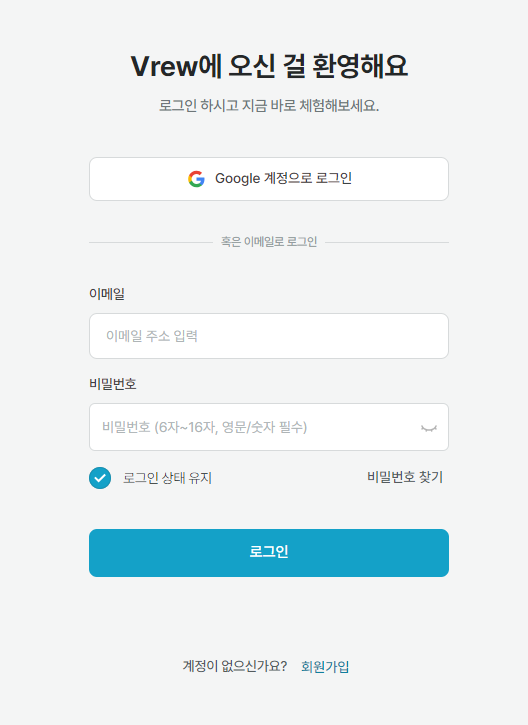
로그인이 완료되면 아래와 같이 선택하는 창이 뜹니다. 선택 후 다음을 누르거나 그냥 닫아도 됩니다.
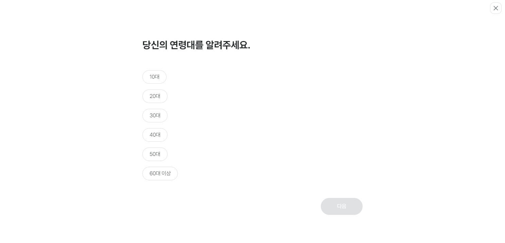
이번달 사용량과 일별 사용기록이 보이는 창이 열립니다. 왼쪽의 이용 요금제에서 업그레이드를 클릭합니다.
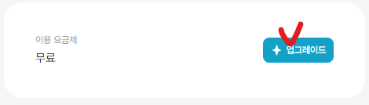
요금제 선택 창이 나옵니다. 처음부터 연구독보다는 월 구독을 선택하고, Light 플랜으로 충분히 작업할 수 있기 때문에 Light 플랜의 시작하기를 클릭합니다.
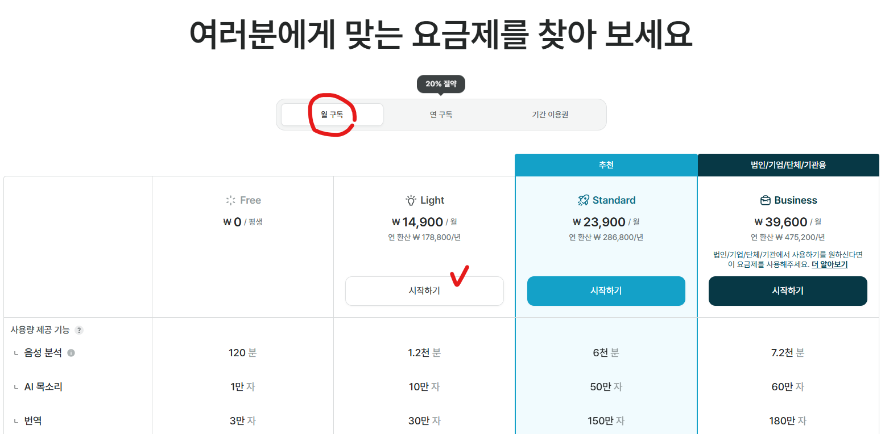
결제란을 모두 채우고 결제하기를 클릭합니다.
3. 새 프로젝트 만들기
결제가 완료되면 창을 닫고 다시 Vrew를 실행합니다. 아래와 같은 화면이 뜨면 새로 만들기를 클릭합니다.
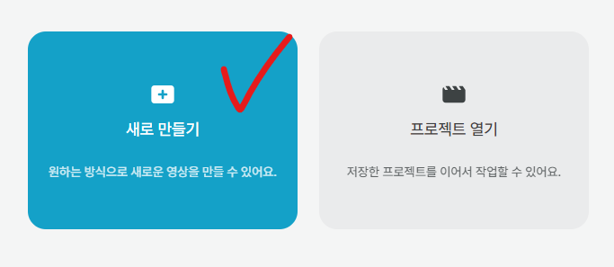
HeyGen으로 영상을 이미 만들어두었기 때문에 비디오/오디오 불러오기를 클릭 후 HeyGen에서 만든 영상을 선택합니다.
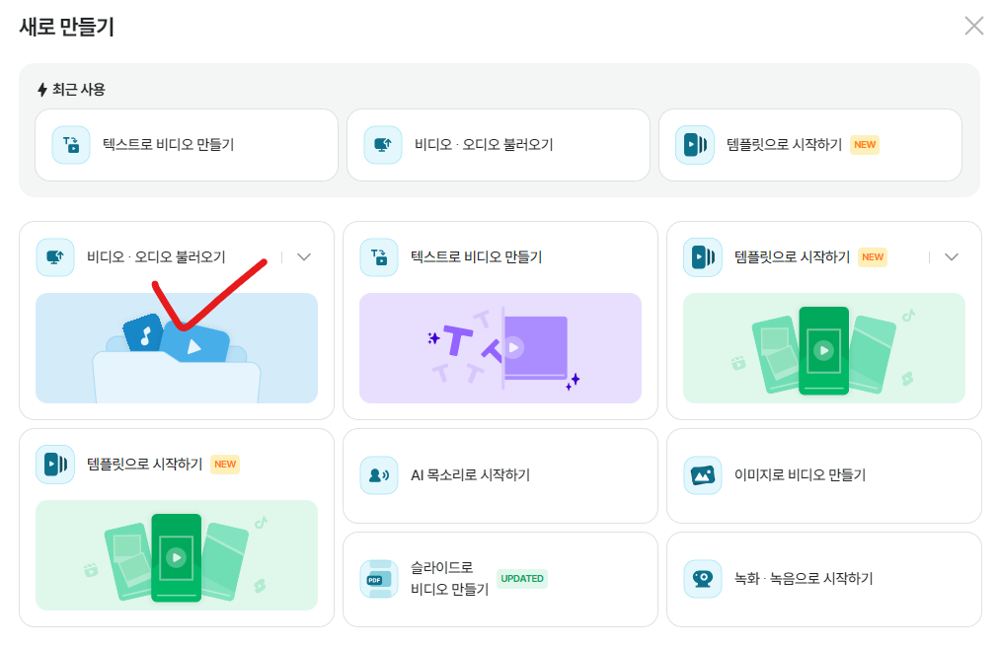
변환 권장 파일이라고 뜨면 예를 클릭합니다.
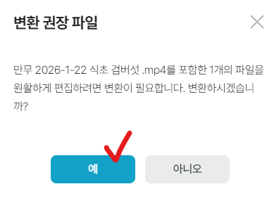
언어가 한국어로 설정되어있는지 확인한 후 원고 불러오기를 클릭합니다.
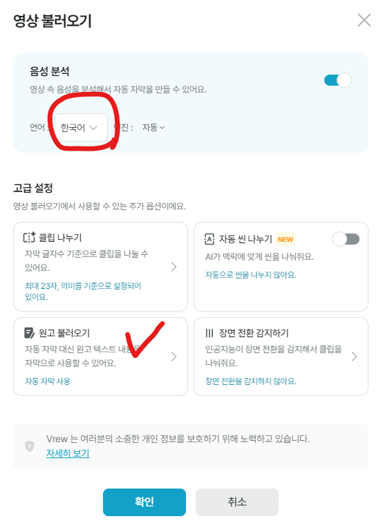
직접 입력하기를 선택하고 완성된 대본을 복사 붙여넣기 합니다.
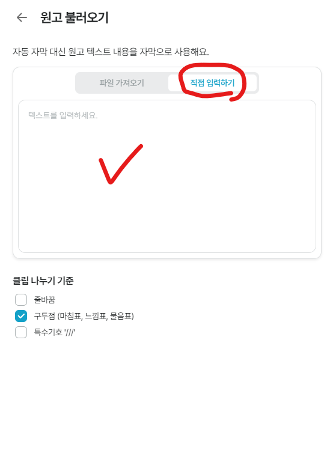
뒤로가기 버튼을 클릭한 후 확인을 누릅니다. HeyGen에서 만든 영상과 대본에 맞게 자막이 자동으로 추가됩니다.
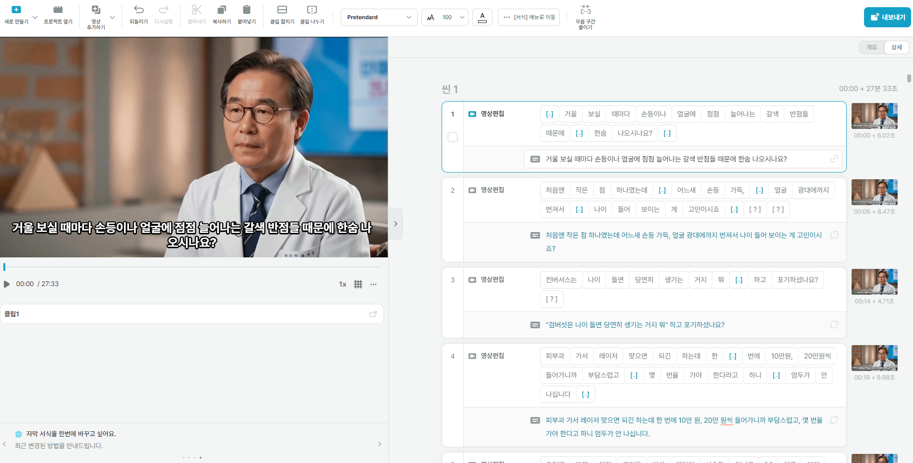
4. 자막 설정
① 자동 클립 나누기
기본 세팅은 한 컷에 대본이 너무 길게 들어가 있어서 자연스럽지 않습니다. 자동으로 짧게 나눠보겠습니다.
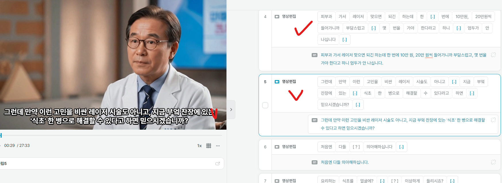
상단의 편집 → 자동 클립 나누기를 클릭합니다.
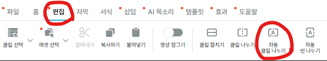
오른쪽에 자동 클립 나누기 창이 뜨면 아래와 같이 설정합니다.
- 적용 범위: 전체
- 최대 글자수: 22~30자 (원하는 대로)
- 나누기: 의미 기준
설정 후 나누기를 클릭합니다.
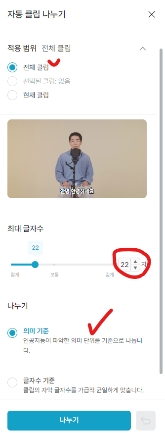
자막 길이가 자연스럽게 나눠진 것을 확인할 수 있습니다.
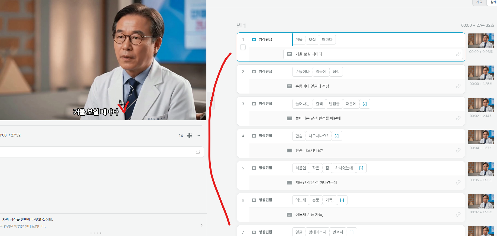
② 자막 서식 설정
상단의 서식을 클릭하면 글씨체와 글씨 크기를 변경할 수 있습니다.
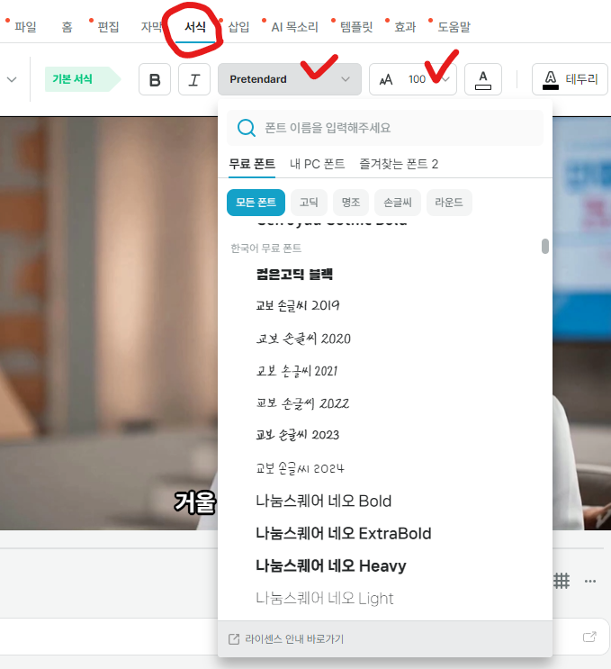
글씨 배경도 넣으면 가독성이 올라갑니다. 서식 → 배경 → 검은색 → 불투명도 70%로 설정합니다.
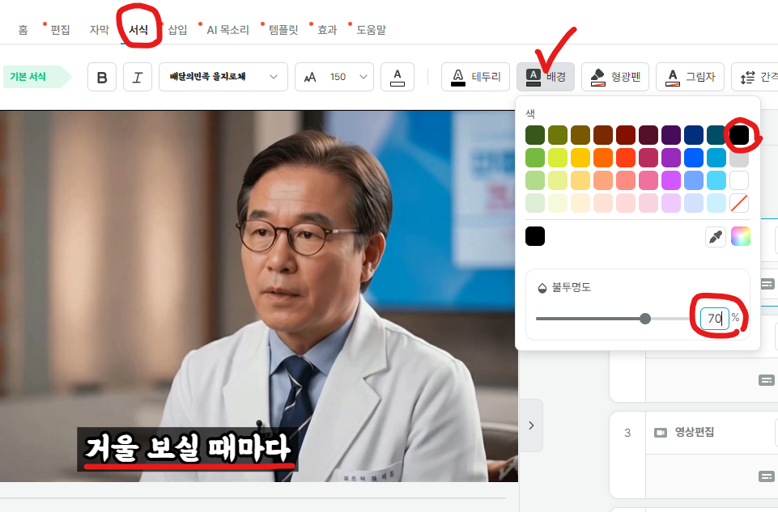
- 글씨체: 배달의민족 을지로체, G마켓 산스
- 글씨 크기: 150~180
- 글씨 배경: 검은색, 불투명도 70%
③ 자막 위치 조정
자막이 너무 아래 붙어있다면 위치를 조정합니다. 서식 → 위치 → 상하: -20~-30 (추천)으로 설정하면 자막 위치가 올라갑니다.
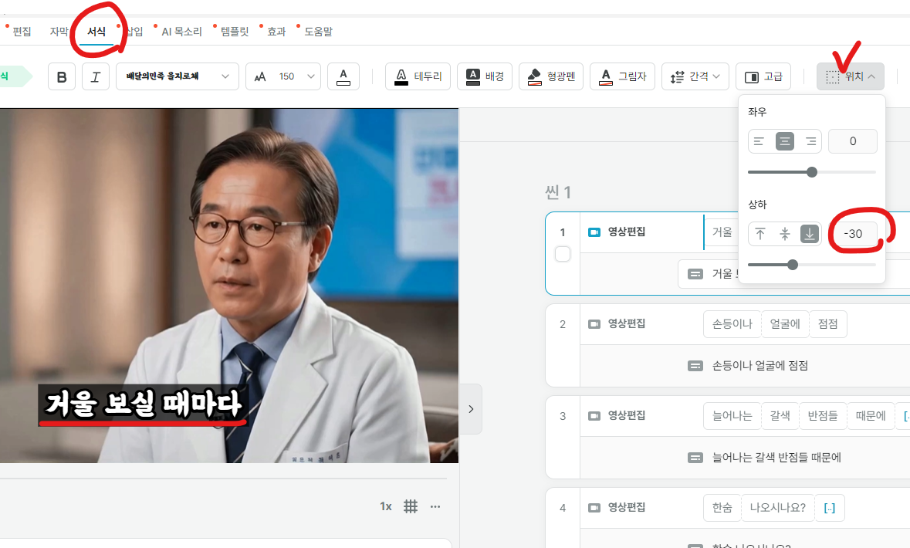
5. 무료 이미지/동영상 추가하기
Vrew 자체에서 무료로 사용할 수 있는 이미지와 동영상이 있습니다. 상단의 삽입 → 무료 이미지/비디오를 클릭합니다.
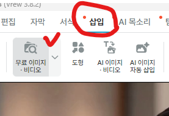
오른쪽에 무료 에셋 창이 뜨면 검색을 통해 원하는 이미지나 동영상을 찾을 수 있습니다.
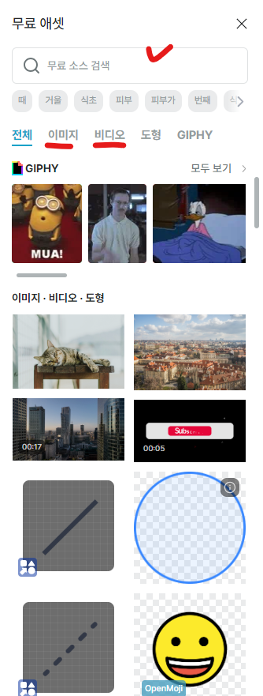
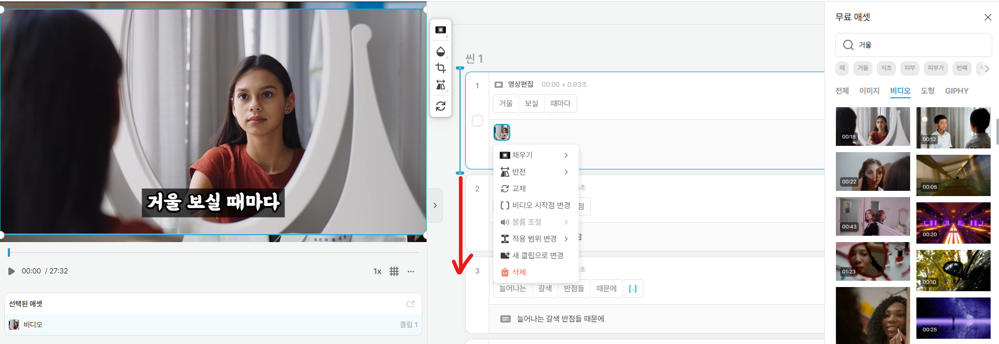
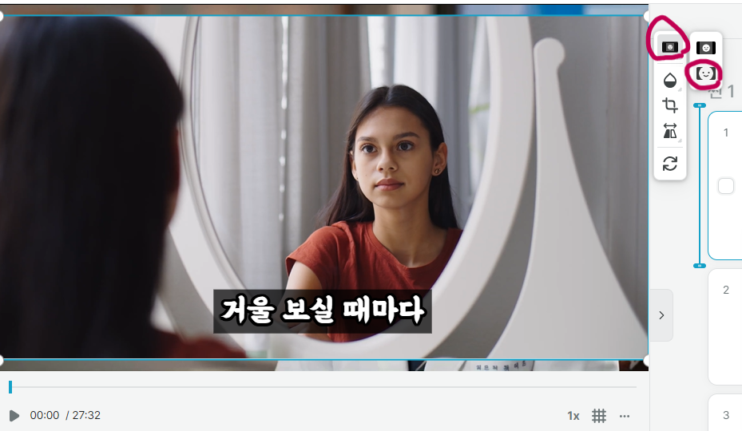
6. 내가 만든 이미지/동영상 삽입하기
Flow 또는 다른 툴로 만들어둔 후킹 이미지나 동영상을 추가할 수 있습니다.
상단의 삽입 → 이미지/비디오 → PC에서 불러오기에서 원하는 파일을 선택하거나 드래그해서 넣습니다.
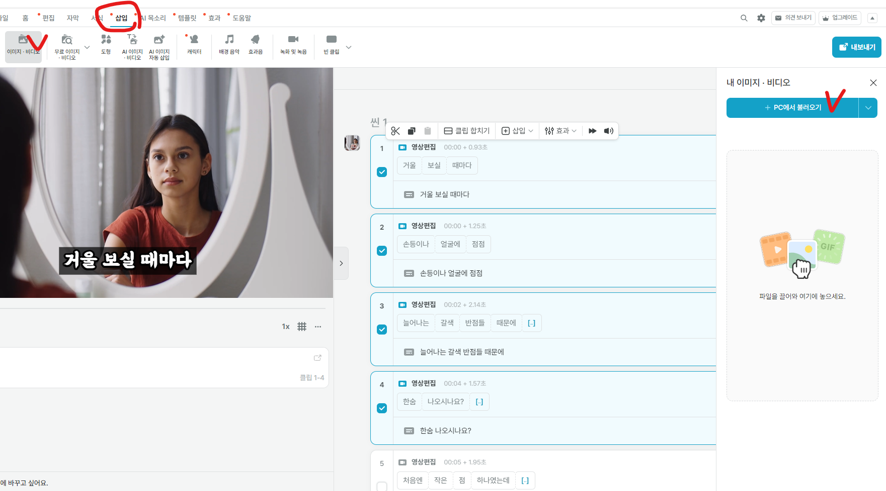
이미지/동영상이 추가되면 클릭해서 범위와 채우기를 설정합니다.
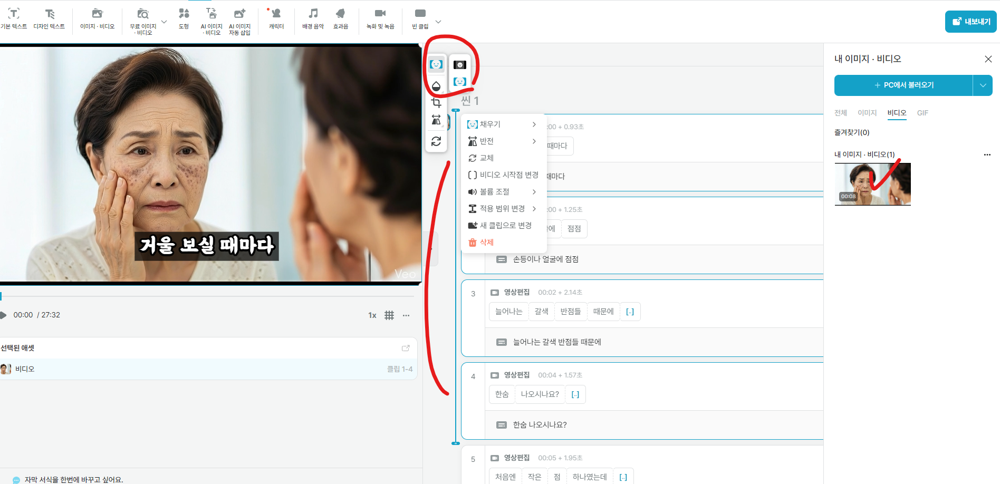
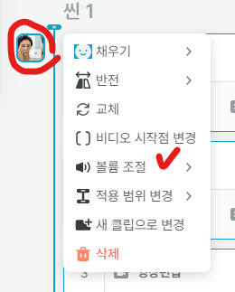
7. 영상 내보내기
편집이 완료되면 영상을 처음부터 끝까지 한 번 확인한 후 오른쪽 상단의 내보내기 → 영상 파일(mp4)를 클릭합니다.
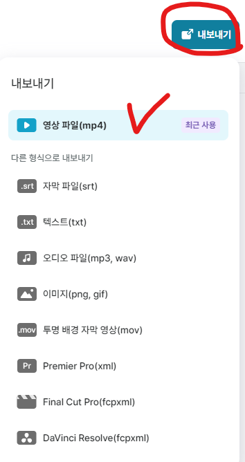
동영상 내보내기 창이 뜨면 아래와 같이 설정합니다.
- 대상 클립: 모든 씬, 모든 클립
- 해상도: 원본 (1920 x 1080)
- 내보내기 설정: 개선된 내보내기 사용
설정 후 내보내기를 클릭합니다. 바탕화면 또는 만들어둔 폴더에 저장해두세요.
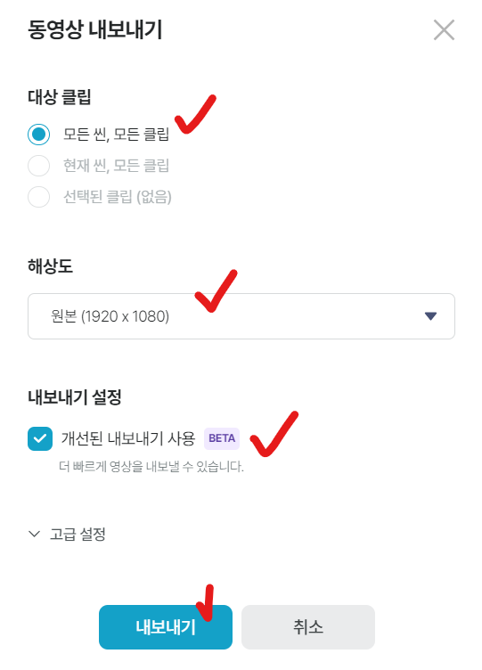
마무리
이렇게 해서 영상 편집까지 모두 끝났습니다.
대본, 동영상은 따로 폴더를 만들어서 헷갈리지 않게 저장해두는 것이 좋습니다. 또한 만든 영상들은 지우지 말고 모아두세요. 나중에 라이브 스트리밍을 할 때 필요합니다.